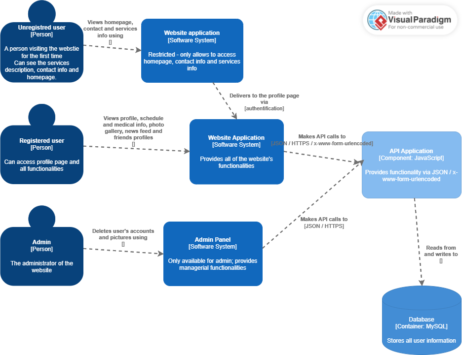

Cuddle Cloud Childcare Manager Software Requirements Specification
Abstract
1. Introduction
2. Overall Description
3. User Interfaces
4. System Features
5. Diagram
6. Hosting
1. Introduction
1.1 Product Scope
Cuddle Cloud is a comprehensive web application designed to facilitate the management of resources related to child care for families and couples. It offers a centralized platform for tracking various aspects of a child's development:
- Feeding and Sleep Schedule Management: Users can easily record and track their child's feeding and sleep schedules, helping to establish routines and identify patterns.
- Multimedia Resource Storage: Cuddle Cloud allows users to upload and store photos, videos and other multimedia resources capturing memorable moments and milestones in their child's development.
- Medical History Tracking: The application enables users to maintain a comprehensive record of their child's medical history, including vaccinations, illnesses and growth milestones.
- Social Relationship Management: Users can document and track their child's interactions with other children, such as cousins, classmates and friends, fostering a sense of community and social integration.
- Chronological Timeline: FamilyCare Connect presents a chronological view of the most significant moments and events in a child's life, providing users with a visually appealing and organized overview of their child's journey.
- Sharing Capabilities: Users can share the most significant moments captured within the application with friends and family via our news feed based on the friendship functionality.
1.2 References
2. Overall Description
2.1 Product Functions
1. User Authentication and Authorization:
- Allow users to register and log in.
- Implement role-based access control to ensure appropriate access levels for different users.
2. Child Profile Management:
- Enable users to create and manage profiles for their child, including basic information, medical records and social relationships.
3. Feeding and Sleep Schedule Tracking:
- Provide functionality for users to record and monitor feeding and sleep schedules for their child.
- Allow users to view historical data and analyze patterns in feeding and sleep habits.
4. Multimedia Resource Storage:
- Allow users to upload, store, and organize photos, videos and other multimedia resources related to their child's development.
5. Chronological Timeline View:
- Present a chronological timeline view of the most significant moments and events captured for each child.
- Enable users to navigate through the timeline and view details of individual events.
6. Sharing Capabilities:
- Implement features for users to share selected moments and milestones with friends and family via our news feed.
7. Social Relationship Management:
- Provide tools for users to manage and maintain social relationships within the application.
2.2 User Classes and Characteristics
1. Primary Caregivers:
- Characteristics: Primary caregivers, such as parents or guardians, who are directly responsible for the day-to-day care of the child.
- Frequency of Use: High, as they will interact with the application regularly to manage various aspects of child care.
- Subset of Product Functions: Access to all features of the application, including child profile management, scheduling, multimedia storage and social relationship management.
- Technical Expertise: Varied, ranging from novice users to those comfortable with technology.
- Security or Privilege Levels: Full access to all features and information related to their child's care.
- Educational Level or Experience: Varied, but typically possess basic to intermediate computer literacy skills.
2. Unauthenticated Users:
- Characteristics: People who access the website for the first time or who don't want to create an account.
- Frequency of Use:Low, as they cannot access the program's functions and can only view certain pages.
- Subset of Product Functions: Access to description about the website, it's services and contact information.
- Technical Expertise: Varied, ranging from novice users to those comfortable with technology.
- Security or Privilege Levels: Reduced access to features.
- Educational Level or Experience: Varied, but typically possess basic to intermediate computer literacy skills.
3. Administrator:
- Characteristics: Administrators are responsible for managing the overall operation and maintenance of the CuddleCloud application.
- Frequency of Use: Moderate, typically involved in system setup, user management, and addressing technical issues.
- Subset of Product Functions:Access to administrative features such as user management, system configuration, and troubleshooting tools.
- Technical Expertise: High, with proficiency in system administration and troubleshooting.
- Security or Privilege Levels: Highest level of access, with privileges to manage all aspects of the application, including user accounts and system settings.
- Educational Level or Experience: High level of technical expertise and experience in system administration and software management.
2.3 Operating Environment
2.4 User Documentation
For easier access and understanding by the user, we added a page that describes to the users our services and one for contact info and social media.
After reading the description of our services, the user can then decide whether they want to create an account or not, rather then just having a registration page as our index.
3. User Interfaces
The website has an established colour pallette and also rounded corners for a more kid friendly approach.
There are multiple backgrounds for responsiveness reasons based on the screen type.
4. System Features
1. Pre-Authentication:
Multiple pages showcasing a short description of the website, services and contact info.
2. Authentication:
- A registration form that asks for inputs a username, email and a password (the password is hidden, but there is the "show password" button implemented in javascript that allows to see password). Below there are two links, one that takes the client back to the home page and the other to the login form for people with accounts. The Sign Up button takes you directly to the profile page, in the future it will create an account that will be saved in the database and create a unique page for each new client.
- A login form that asks for inputs the username and password ("show password" option implemented). Below there are links to redirect you back to the home page, to the sign up form and to a "Forgot password" page. The administration login is now a link that takes you to the administrator page, but it will be implement as a unique set of username and password from the database.
3. Forgot Password
- The Forgot Password page has a form that asks for username and email as inputs. Upon introducing them, the user will get a code that they will be able to use to change their password.
4. Administrator Page
- The administrator page offers two options, first to delete a user's account and the second to delete a user's photo.
- Sign Out button that takes you back to the home page.
- Username: Admin
- Password: Cpo@as43tr
5. Profile Tab
- The profile tab has the Sing Out button that takes you back to the home page. The profile has a tab implemented that allows the user to switch between the funtions.
- The profile option shows a picture of the child, as well as a small description. The site will give the user the option to enter and modify the information at any time.
- A button that will give the user the option to change their info, such as username, password and profile info.
6. Schedule Tab
- The finctionality is implemented as a form that allows to enter details about activities, with the input options being the date, the type of activity (such as nap, feeding, school, play-time...) and also details about the activity. The inputs from this form will be displayed on it's right as little blocks in chronological order.
7. Medical History Tab
- The Medical History tab displays additional info about the child, such as full name, blood type, parent's name etc. The parent's will be able to enter and modify this info at any time.
- Below the description section, there is a form where the parent can introduce information about the child's scikness, such as starting date, ending date, symptoms, treatment and any other details. The inputs from this form will be displayed in little cases on the right of the form in chronological order.
8. Photo Gallery Tab
- The photo gallery has a "Post photo" button that allows the user to upload photos or video that will be shown on the page. The user will be able to choose whether they want their image to be shown smaller, next to 3 other photos on one row or bigger to cover the whole space.
- The photos can have titles and also captions underneath.
- There will be 3 buttons for the user to use to post their picture on instagram, facebook or twitter. They will be given the option to upload either a file from their device or one from the photo gallery. The buttons will be displayed at the end of the tab bar, right now they are placed at the end of the page until further implementation. ~ This option does not exist because I did not get approval from Facebook!
9. Friends Tab
- The user can search for a friend based on their name. The other person will get a friendship request that they can accept or decline.
- Below the popus, the user can see their friends and the small description that they added on their profile.
10. News Feed
- On the news feed, the parent will be able to see other children posts,as well as their username and captions, but only if they are friends.
- The photos will be the ones from the photo gallery, shared so they can be seen by their friends.
11. Universal feature
- The sign out button will take the user back to the home page.
- All pages have a colorful aspect, with different backgrounds and a shared color pallette for nicer aspect.
- All pages have the Cuddle Cloud logo on the left corner of the page or in the upper middle (for login, forgot password and registration pages)
- A fixed navbar is shown on all pages. The pre-authentification navbar has the redirection to the home, contact, services and sign in pages and the profile one has the sign out button on the navbar.
5. Diagram

6. Hosting
The website will be hosted at: CuddleCloud